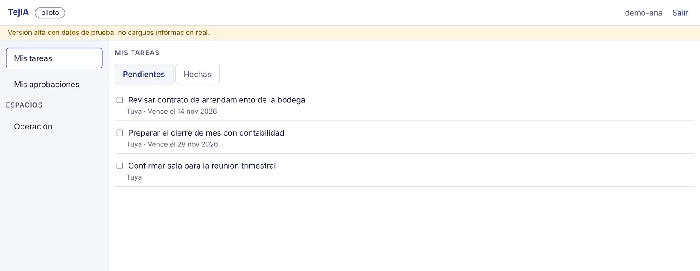
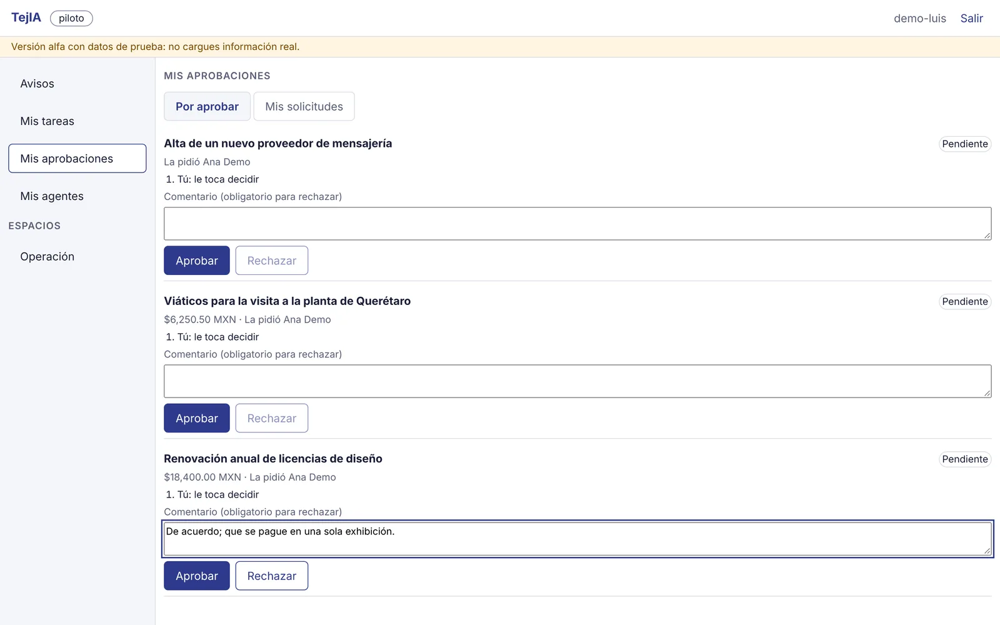
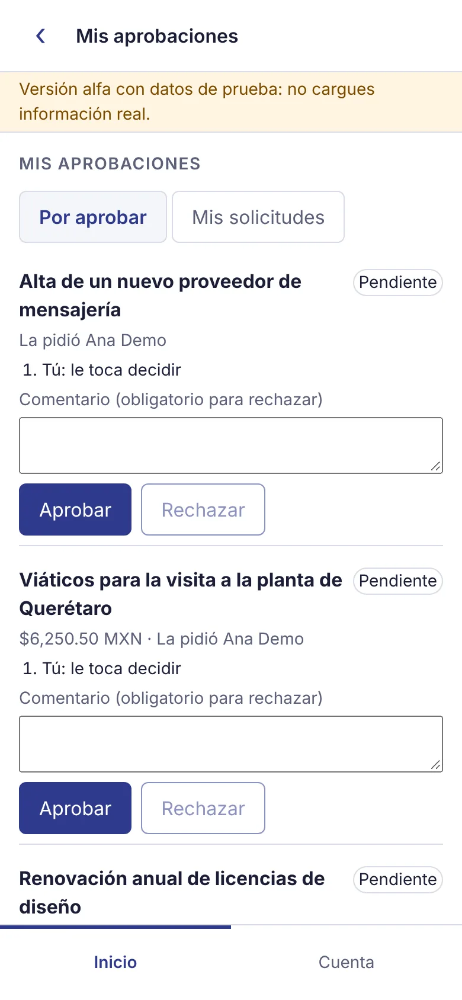

Documentos
Espacios y notas que no pierden nada
Cada área tiene sus espacios, como carpetas compartidas. Cada nota guarda sus versiones y, si alguien más la cambia mientras escribes, te avisa sin borrar tu texto.

Suite de trabajo · hecha en México
TejIA reúne los documentos, las tareas, las aprobaciones y las personas de tu equipo bajo los mismos permisos. Lo que compartes en un lugar se respeta en todos, y en cuanto le quitas el acceso a alguien, deja de verlo.
Alfa Hoy funcionan notas, tareas, aprobaciones paso a paso y el directorio de la empresa, en la computadora y el celular. Es de uso interno, en prueba; todavía no hay servicio abierto.
Hoy el trabajo de una empresa vive repartido: una suite de oficina, un chat, una app de notas, hojas sueltas y la mensajería del celular. Cada una con sus propios permisos, su propio rastro y su propio precio. TejIA se construye desde cero para cerrar esas costuras, no para sumar otra app.
Lo que compartes o retiras se respeta en todo, y los cambios quedan en una misma bitácora. En muchas suites, la auditoría y el control de fugas se pagan aparte, en el plan más caro; aquí vienen de origen.
Paso a paso, con monto y comentario, sin poder reescribir lo decidido. Después: reglas por monto y por área.
La factura CFDI que recibes, revisada ante el SAT, aprobada y pagada con su rastro, sin brincar entre programas.
Que lo que el equipo acuerda por la mensajería del celular quede con su rastro y sus permisos, también cuando alguien deja la empresa.
Capturas reales de la versión alfa, con datos de prueba.
Documentos
Cada área tiene sus espacios, como carpetas compartidas. Cada nota guarda sus versiones y, si alguien más la cambia mientras escribes, te avisa sin borrar tu texto.
Tareas
Crea tareas en el espacio que corresponde, con fecha límite, para ti o para alguien del equipo. «Mis tareas» junta lo pendiente de todos tus espacios y lo marcas hecho con un clic.

Aprobaciones
Una solicitud pasa por una a cinco personas en el orden que elijas, con monto en pesos si hace falta. Cada quien aprueba su paso o lo rechaza con un comentario. Lo pedido y lo decidido ya no se puede reescribir: para corregir, se cancela y se pide de nuevo.


Eliges a quién asignar o quién aprueba buscando su nombre, con o sin acentos. Solo aparecen quienes pueden ver ese espacio.
Un espacio o una nota se comparte con una persona, un grupo, un área o toda la empresa, para leer, comentar, editar o administrar. Por ahora los permisos los configura el equipo técnico; compartir desde la app llega con la wiki.
Si trabajas para varias empresas o razones sociales, eliges en cuál entrar; lo de una nunca aparece en la otra.
Todo sobre los mismos permisos. El orden puede cambiar con lo que pidan los equipos que lo usan.
Editar el mismo documento al mismo tiempo, con historial y comentarios. Es también el editor de la wiki.
Páginas con historial y una búsqueda que entiende el significado, pensada para calcularse en tus propios servidores, sin mandar tus textos a terceros.
Hojas con fórmulas, calculadas en el servidor, con permisos por rango e ida y vuelta con archivos .xlsx.
Conversaciones donde compartir un documento da acceso y retirarlo lo quita; reuniones con transcripción en español.
Formularios por tipo de solicitud, avisos y lectura de facturas CFDI con validación ante el SAT.
Anotar y firmar PDF, tablas con permiso por campo y tableros en vivo, también dentro de los documentos.
Computadora — app de escritorio para Linux, en prueba interna; las de Windows y Mac están en preparación. Inicias sesión en tu navegador y la app se abre ya conectada.
Celular — se instala desde el navegador, con pantalla adaptada; en el teléfono solo se guarda la interfaz, no tus datos.
Por ahora TejIA está en alfa, en uso interno de prueba.